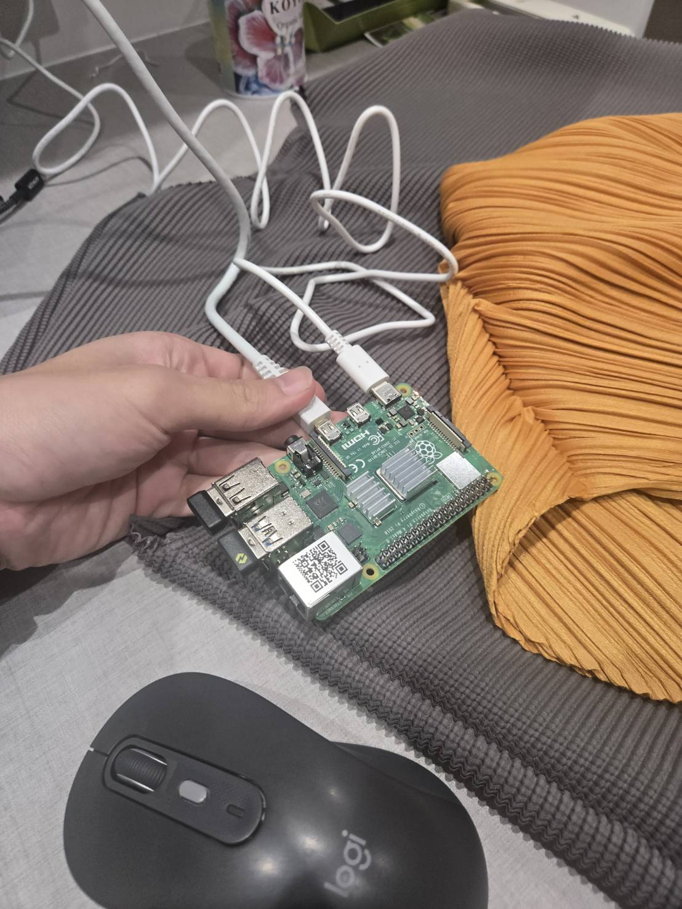
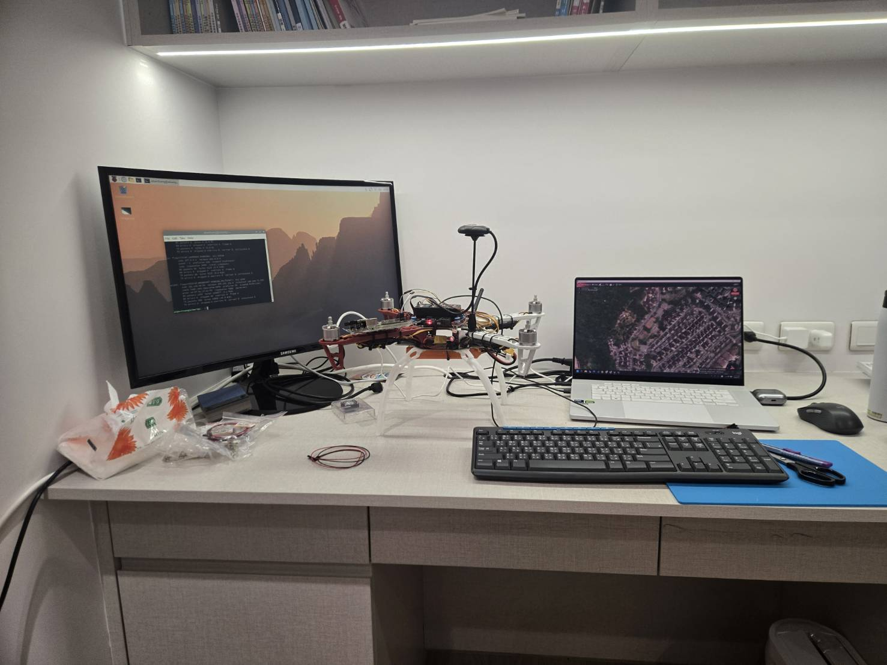

NCNN → ONNX Runtime
Moved away from an unstable NCNN path and used ONNX Runtime for reliable inference.
I deployed YOLO on a Raspberry Pi 4B and optimized the inference pipeline from approximately 0.81 FPS to approximately 5.33 FPS usable live performance.
I configured Linux on the Raspberry Pi, connected through SSH, integrated a camera, and mounted the companion computer on the drone using the custom 3D-printed hardware.
Linux setup and SSH access.
Custom Pi/Pixhawk mount printed and fitted.
Approximately 0.81 FPS.
Approximately 5.33 FPS usable live performance.


The performance improvement came from several changes rather than a single optimization.
Moved away from an unstable NCNN path and used ONNX Runtime for reliable inference.
Reduced input resolution to lower computation and improve frame rate.
Configured the Raspberry Pi to use all four CPU cores more effectively.
Modified the inference script and removed unnecessary overhead around each frame.
My initial YOLO implementation ran at about 0.81 FPS. After changing the inference backend, reducing input resolution, enabling multi-core execution, and removing pipeline overhead, usable live performance reached about 5.33 FPS in my earlier tests. The recordings below show a later unoptimized-versus-optimized comparison with the live FPS counter visible on screen.
The detector calculates the target center and returns normalized horizontal and vertical offsets relative to the center of the image. The autonomy code uses those offsets to generate alignment corrections.